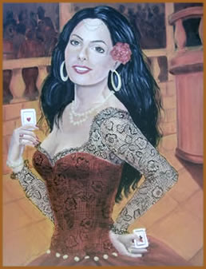
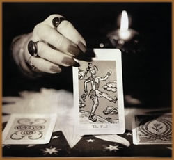

Podemos compreender como Cartomancia
a arte de prever o futuro através de cartas, sejam elas
do baralho tradicional, tarô ou baralho cigano.
Indícios da existência
de jogos de carta são encontrados em várias partes
do mundo: no Egito, no extremo Oriente, na Índia, no continente
Americano, e até mesmo na Oceania.
A referência documental mais
antiga já menciona uma data posterior a passagem do primeiro
milênio: um dicionário chinês, publicado no
ano de 1678 cita, numa de suas passagens, que em 1120 um oficial
do imperador Huei-Song ofereceu-lhe um jogo de sua própria
invenção, constituído por 32 tabletes de
marfim relacionados com vários temas, como o céu,
a terra, o homem e a sorte.
Posteriormente as cartas apareceram na Índia onde os naipes
representavam as encarnações de VISHNU (um dos principais
deuses do hinduísmo). Quando os ciganos, daquele país,
migraram em direção ao Ocidente levaram as cartas
e a cartomancia a toda a Ásia menor e ao Norte da África.
No século XVI, as cartas
já eram conhecidas em toda as nações européias,
se tornando uma verdadeira paixão, à qual recorriam
os Reis e os Príncipes para saber o destino de seu reino.
A
cartomancia têm sido há muito considerada um domínio
especial dos ciganos, um povo nômade cujo folclore está
repleto de lendas sobre poderes secretos e ritos mágicos.
E assim como as artes milenares que eles praticam, a origem e
o modo de ser ciganos permanecem encobertos pelo mistério,
emaranhados em lendas e tradições.
Crê-se que os ciganos tenham
vivido originalmente na Índia. Mas em algum momento do
século IX, eles começaram um lento deslocamento
para o oeste. No início do século XV, grandes grupos
de pessoas de pele morena, vestidas exoticamente, alegando serem
peregrinos religiosos vindos de um país chamado Pequeno
Egito, começaram a aparecer na Europa. Esses "egípcios",
ou gypsies, como eles se tornaram conhecidos em língua
inglesa, foram de início bem recebidos pelos simpáticos
habitantes. Mas algumas tribos errantes logo ganharam má
reputação, como pequenos ladrões e trapaceiros
sem convicção religiosa.
Considerados autoridades em assuntos
ocultistas, aos ciganos foram creditados com freqüência
talentos sobrenaturais para além mesmo de suas próprias
crenças, e muitos negociaram com avidez seus supostos poderes
com habitantes locais. Normalmente, apenas algumas moedas podiam
comprar o que fosse: de ervas medicinais para dores a poções
do amor e afrodisíacos. Mas foi pela prática das
artes da profecia - leitura das cartas do tarô ou da borra
do chá, da bola de cristal ou das linhas da mão
- que os ciganos se tornaram mais conhecidos.
Atualmente, a arte da Cartomancia
já se expandiu, não sendo mais atribuída
apenas aos ciganos, embora a sua veracidade e funcionalidade sejam
ainda profundamente contestadas por grande parte da sociedade.
O
Baralho
O baralho comum contém 52
cartas, divididas em quatro naipes (paus, copas, espadas e ouros)
com 13 cartas cada. Estas 13 cartas são compostas de números
de um (ás) a dez, e mais três figuras (valete, dama
e rei), o que resulta também em 40 cartas referentes à
números e 12 cartas referentes à figuras. Estes
números permitem uma grande variedade de associações
simbólicas de diferentes tipos.
As 52 cartas do baralho podem ser
relacionadas com as 52 semanas do ano, sendo que os naipes podem,
por sua vez, serem associados às 4 estações
do ano: ouros como primavera, paus como verão, copas como
outono e espadas como inverno.
Alguns estudiosos do tema consideram
que os quatro naipes também podem ser associados aos períodos
de um dia ou de uma vida, sendo atribuída a cada um deles
a regência de ¼ dessas extensões do tempo.
O ás de cada naipe rege a primeira semana da estação
do ano a ela relacionada. O rei tem a segunda semana sob sua influência,
seguida pela dama, que rege a terceira. As regências se
sucedem na ordem decrescente, até o dois, que domina a
última semana da estação. Os quatro naipes
podem ser associados também com os quatro elementos, (fogo,
água, ar e terra) aspecto crucial na cartomancia.
As cartas vermelhas são
geralmente associadas às características femininas,
passivas, yin; as pretas relacionam-se, em geral, às características,
masculinas, ativas, yang.
O
Tarô
O
tarô possui 78 cartas, composto por vinte e um trunfos,
um curinga e quatro conjuntos de naipes com quatorze cartas cada
— dez cartas numeradas e quatro figuras (uma a mais por
naipe que o baralho lusófono).
Quando usado para fins divinatórios,
cada carta é denominada de arcano, palavra que
significa "segredos a serem desvendados" e foi incorporada
pelos ocultistas do século XIX. Os trunfos e os curingas
são conhecidos como arcanos maiores e as cinquenta e seis
cartas de naipe são arcanos menores.
Os significados divinatórios
são derivados principal-mente da Cabala
e da alquimia medieval,
mas atualmente há muitas outras vertentes provenientes
da Astrologia, Numerologia
e outros ramos.
O
Baralho Cigano
Este baralho foi elaborado pelos
ciganos com base no oráculo mais conhecido e difundido
no mundo: o Tarô. Supõe-se que os ciganos até
chegaram a usar as 78 lâminas do Tarô, porém,
sentiram a necessidade de terem um oráculo próprio
e resolveram adaptar as 78 lâminas em 36, surgindo assim,
o Baralho Cigano.
Provavelmente a necessidade de
se ter um oráculo próprio veio da natureza dos ciganos,
que só usavam o que era deles e recusavam tudo o que fosse
dos "Gadjos" (não-ciganos), pois não queriam
ficar presos às idéias e símbolos que não
pertenciam à sua cultura e cotidiano. Sendo assim, eles
transformaram os desenhos, mudaram os significados do tarô
original e puderam trabalhar com um instrumento próprio.
Encontramos, basicamente, no Baralho
Cigano símbolos que falam da "vida ao ar livre",
própria do mesmos: a natureza, rios, árvores, animais,
etc.
Faz parte da tradição
cigana a prática da adivinhação pelas mulheres.
Normalmente elas possuem dois tipos de cartas: uma para o uso
restrito ao grupo cigano, e outro para fazer adivinhação
à comunidade.
Por
Spectrum